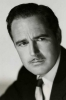

Country:United States, 74 minutes
Spoken languages:
Genres:Horror
Director(s):Roy William Neill
Writer(s):Curt Siodmak
Video Codec:Unknown
Number: 1085


Certification:NR
Storyline:
Grave robbers open the grave of the wolf man and awaken him. He doesn't like the idea of being immortal and killing people when the moon is full so tries to find Dr. Frankenstein, in the hopes that the doctor can cure him. Dr. Frankenstein has died; however, his monster is found.
Cast: 


Medium: Original DVD,
Comments: Part of: The Wolf Man - The Legacy Collection
Loaned: No
Aspect ratio: Unknown